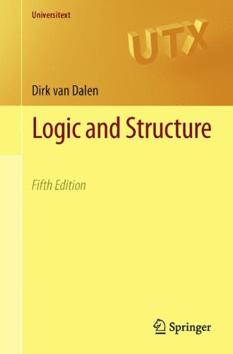

van Dalen: Logic and Structure

Dirk van Dalen’s popular Logic and Structure (Springer: 263 pp. in the most recent edition) was first published in 1980, and has now gone through a number of editions. A very substantial chapter on incompleteness was added in the fourth edition in 2004. A fifth edition published in 2012 adds a further new section on ultraproducts. Comments here apply to these last two editions.
The book has a lot to recommend it, although it isn’t without its flaws and oddities of presentation. But overall, it is a very solid piece of work (which explains why it is indeed widely used for courses).
Some details Ch. 1 on ‘Propositional Logic’ gives a presentation of the usual truth-functional semantics, and then a natural deduction system (initially with primitive connectives → and ⊥). This is overall pretty clearly done – though really rather oddly, while van Dalen uses in his illustrative examples of deductions the usual practice of labelling a discharged premiss with numbers and using a matching label to mark the inference move at which that premiss is discharged, he doesn’t pause to explain the practice in the way you would expect. Van Dalen then gives a standard Henkin proof of completeness for this cut-down system, before re-introducing the other connectives into his natural deduction system in the last section of the chapter.
Compared with Chiswell and Hodges, van Dalen’s treatment has a somewhat less friendly, somewhat more conventional, mathematical look-and-feel: but it is still accessible — and will certainly be very readily manageable if you’ve read C&H first.
(It should be noted though that van Dalen can be surprisingly slapdash. For example, a tautology is defined is defined to be an (object-language) proposition which is always true. But then the meta-linguistic schema \(latex \varphi \land \psi \leftrightarrow \psi \land \varphi\) is said to be a tautology. He means the instances are tautologies; compare Mendelson who really does think tautologies are schemata. Again, van Dalen presents his natural deduction system, says he is going to give some ‘concrete cases’, but then presents not arguments in the object language, but schematic templates for arguments, written out using ‘φ’s and ‘ψ’s again.)
Ch. 2 describes the syntax of a first-order language, gives a semantic story, and then presents a natural deduction system, first adding quantifier rules, then adding identity rules. Overall, this is pretty clearly done (though van Dalen reuses variables as parameters, which isn’t the nicest way of setting things up, especially if in other respects we are nodding towards Gentzen). The approach to the semantics is to consider an extension of a first order language L with domain A to an augmented language *L**A* which has a constant \(latex \overline{a}\) for every element a ∈ A; and then we can say ∀*x**φ(x) is true if all \(latex \varphi(\overline{a})\) are true. Fine: though it would have been good if van Dalen had paused to say a little more about the pros and cons of doing things this way rather than the more common Tarskian way that students will encounter. (Let’s complain some more about van Dalen’s slapdash ways. For example, he talks about ‘the* language of a similarity type’ in §2.3, but gives examples of different languages of the same similarity type in §2.7. He fusses unclearly about different uses of the identity sign in §2.3, before going on to make use of the symbolism ‘:=’ in a way that isn’t explained, and is different from the use made of it in the previous chapter. This sort of thing could upset the more pernickety reader.)
Ch. 3, ‘Completeness and Applications’, gives a pretty clear presentation of a Henkin-style completeness proof, and then the compactness and L-S theorems. The substantial third section on model theory goes rather more speedily, and you’ll need some mathematical background to follow some of the illustrative examples. The final section newly added in the fifth edition on the ultraproduct construction speeds up again and is probably too quick to be useful to many.
Ch. 4 is quite short, on second-order logic. If you have already seen a presentation of the basic ideas, this quick presentation of the formalities could be nicely helpful.
Ch. 5 is on intuitionism – this is a particular interest of van Dalen’s, and his account of the BHK interpretation as motivating intuitionistic deduction rules, his initial exploration of the resulting logic, and his discussion of the Kripke semantics are quite nicely done (though again, this chapter will probably work better if you have already seen the main ideas in a more informal presentation before).
Ch. 6 is on proof theory, and in particular on the idea that natural deduction proofs (both classical and intutitionistic) can be normalized. Most readers will find a more expansive and leisurely treatment much to be preferred.
The final 50 page Ch. 7 is more leisurely. It starts by introducing the ideas of primitive recursive and partial recursive functions, and the idea of recursively enumerable sets, leading up to a proof that there exist effectively inseparable r.e. sets. We then turn to formal arithmetic, and prove that recursive functions are representable (because his version of PA does have the exponential built in, van Dalen doesn’t need to tangle with the β-function trick.). Next we get the arithmetization of syntax and proofs that the numerical counterparts of some key syntactic properties and relations are primitive recursive. Then, as you would expect, we get the diagonalization lemma, and that is used to prove Gödel’s first incompleteness theorem. We then get another proof relying on the earlier result that there are effectively inseparable r.e. sets, and going via the undecidability of arithmetic. The chapter finishes by announcing that there is a finitely axiomatized arithmetic strong enough to represent all recursive properties/relations, so the undecidability of arithmetic implies the undecidability of first-order logic. There’s nothing, however, about the second theorem: so most students who get this far will want that bit more more. However, this chapter is all done pretty clearly, could probably be managed by good students even as a first introduction to its topics, and would certainly be very good revision/consolidatory reading for those who’ve already encountered this material.
Summary verdict Revisiting this book, I find it a rather patchily uneven read. Although intended for beginners in mathematical logic, the level of difficulty of the discussions rather varies, and the amount of more relaxed motivational commentary also varies. As noted there are occasional lapses where van Dalen’s exposition isn’t as tight as it could be. So this is probably best treated as a book to be read after you’ve had a first exposure to the material in the various chapters: but then it should prove pretty helpful for consolidating/expanding your initial understanding across quite a broad logical front and then pressing on a few steps.